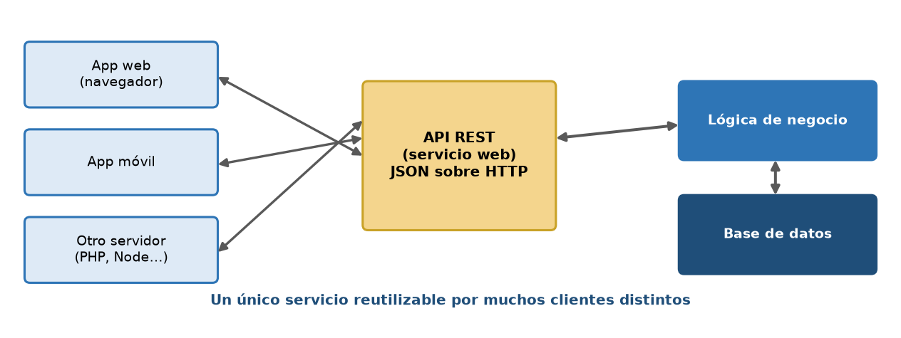
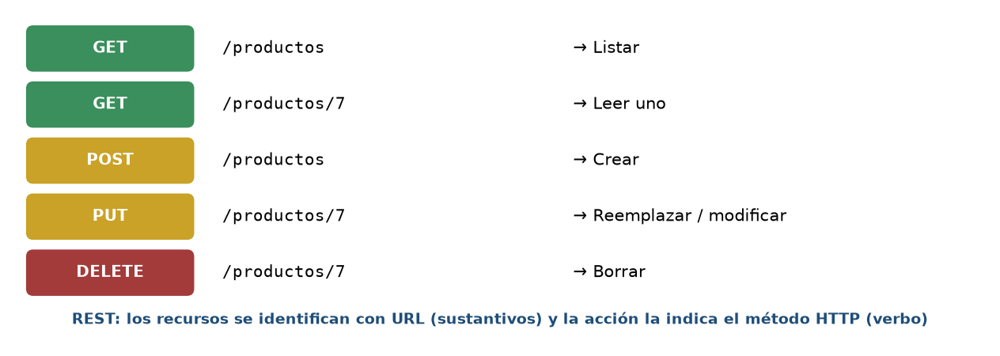
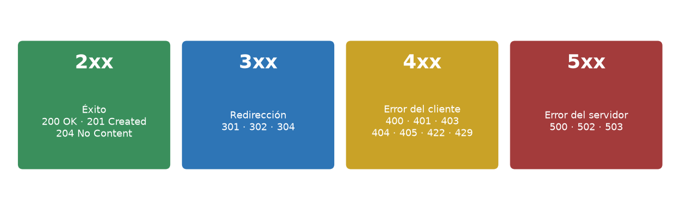
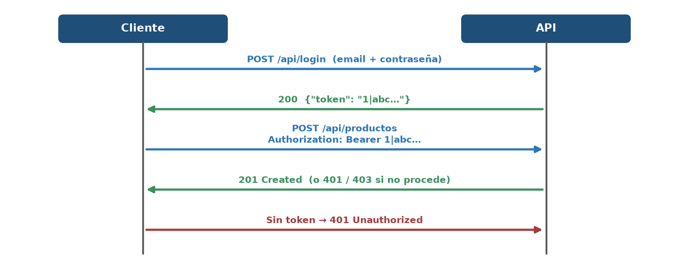
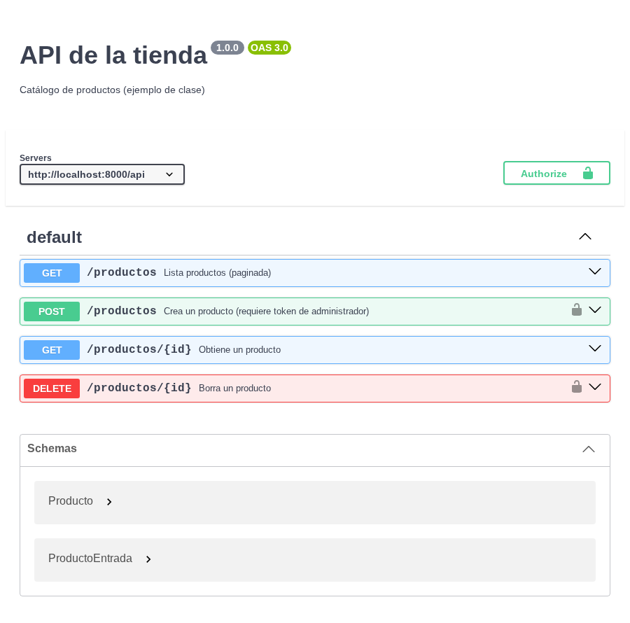

Inicio › UT6
Qué se trabaja
- Arquitectura REST, JSON, códigos de estado y autenticación por token.
- Documentación de la API con OpenAPI.
Pruébalo en el laboratorio
UT6 · Una «API» que devuelve JSONUT6 · Consumir JSON recibido
Figuras y capturas




